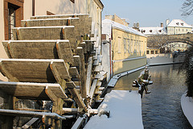

Zimní plavby Pražskými Benátkami
Do 31. března 2014, Křižovnické náměstí 3, Praha 1
Z přístaviště ukrytého v unikátním vodním podzemí Starého města se mohou návštěvníci vydat na plavbu doposud nepoznanými a tajemnými zákoutími matičky Prahy, které často neznají ani rodilí Pražané.
Nejkrásnější výhledy
Svařené víno, praskající dřevo, zasněžená Čertovka … to je zima v Pražských Benátkách. Užijte si plavbu po Vltavě s nejhezčím výhledem na Karlův most a panorama Hradčan. I v největších mrazech vás zahřejí kamínka, tak zvaný lodní bubínek a svařené víno, které obdržíte v rámci ceny lodního listu.
Nejen tajemné prostory
Vydejte se na plavbu doposud nepoznanými a tajemnými zákoutími matičky Prahy. Zhlédněte tajemnou Prahu z paluby vyhlídkových lodí postavených v duchu tradice z konce 19. století. Projeďte se podzemním vodním tunelem pod Starým městem, proplujte tajemnými prostory vodního kanálu Čertovka, které Vás učarují svým zimním kouzlem. V rámci ceny lodního lístku obdržíte drobné občerstvení a vstupenku do Muzea Karlova mostu, kde můžete zhlédnout unikátní model Juditina a Karlova mostu.
Zdroj: http://www.prazskebenatky.cz
Foto: http://www.flickr.com